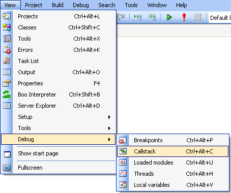

With SharpDevelop you can debug your code without leaving the development environment.
Position the cursor on the line where you want your breakpoint to be located, then click in the left hand margin of the text editor to create the breakpoint. This puts a breakpoint icon in the margin and highlights the line in red.
Alternatively you can select Toggle Breakpoint from the Debug menu or use the keyboard shortcut F7.
To remove the breakpoint simply click the breakpoint icon or select Toggle Breakpoint from the Debug menu.
To run your program under the debugger select Run from the Debug menu.
Your program will then be started and SharpDevelop will change the window layout of the development environment as it switches to the Debug Layout.
To stop the debugger either let your program exit or select Stop process from the Debug menu.
When a breakpoint is hit your program will be paused and the next line to be executed is highlighted in yellow.
Whilst the program is paused you can execute the code line by line using the Debug menu items.
Step into will call the method on the current line and stop at the first line of code inside the method.
Step over will execute the entire method on the current line but it will not step into it.
Step out will finish executing the current method and returns to its parent method.
Continue debugging will continue the program execution so it is running just as it was before it was paused.
You may also want to skip over lines of code whilst you are debugging or even to re-execute the same lines of code again. In the text editor select the line of code you want to execute next, right click and select Set current statement.
The selected line will then be highlighted in yellow and will be the next line of code executed.
Whilst the program is paused you can view the current state of variables and objects in order to diagnose problems. This is covered in the following sections.
If you move the mouse over a variable SharpDevelop will display a special tooltip called a data tip.
Data tips show more information than ordinary tooltips, allowing you to explore an object's members. To see its members expand the data tip by clicking the plus icon .
The Local Variables window allows you to browse variables defined in the function currently being executed, arguments passed into the current function, fields and properties of the class where the function is defined.
From the View menu select Debug and then Local variables.

The Local Variables window is then displayed.
The Callstack window shows you the method calls currently on the stack.
From the View menu select Debug and then Callstack.

The Callstack window will then be displayed.